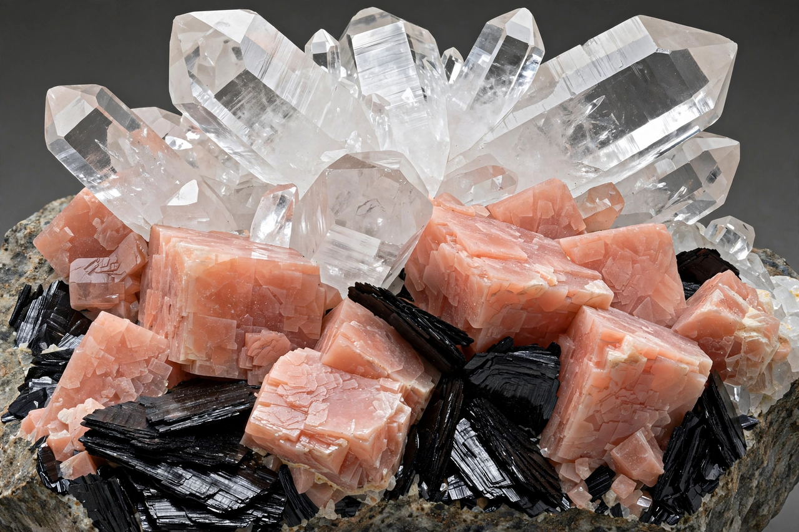

From Wikipedia, the free encyclopedia
| Silicate minerals | |
|---|---|
 Granite's minerals — quartz, feldspar, mica — are all silicates | |
| Basis | Silicate tetrahedron [SiO4]4− |
| Share of crust | ~90% of Earth's crust by volume |
| Classes | Neso-, soro-, cyclo-, ino-, phyllo-, tectosilicates |
Silicate minerals are rock-forming minerals composed of silicate groups — arrangements of silicon and oxygen atoms, usually with other elements such as aluminium, iron, magnesium, calcium, sodium and potassium. They are by far the most abundant class of minerals: roughly 90 percent of the Earth's crust consists of silicates, and about 25 percent of all known minerals are silicates. Their fundamental building unit is the silicate tetrahedron, one silicon atom bonded to four oxygens.
Silicate classification follows how the tetrahedra link by sharing oxygen atoms (polymerisation):
Greater polymerisation generally means greater hardness and resistance to weathering, which is why quartz survives as sand while olivine breaks down quickly at the surface.
Silicates make up the mantle (olivine and its high-pressure polymorphs), the oceanic crust (plagioclase, pyroxene) and most of the continental crust. Their crystallisation from magma follows Bowen's reaction series, a foundational scheme of igneous petrology. Economically, silicates supply glass, ceramics, cement, refractories and gems, and asbestos minerals (fibrous amphiboles and serpentine) were once widely used before their health hazards ended most applications.